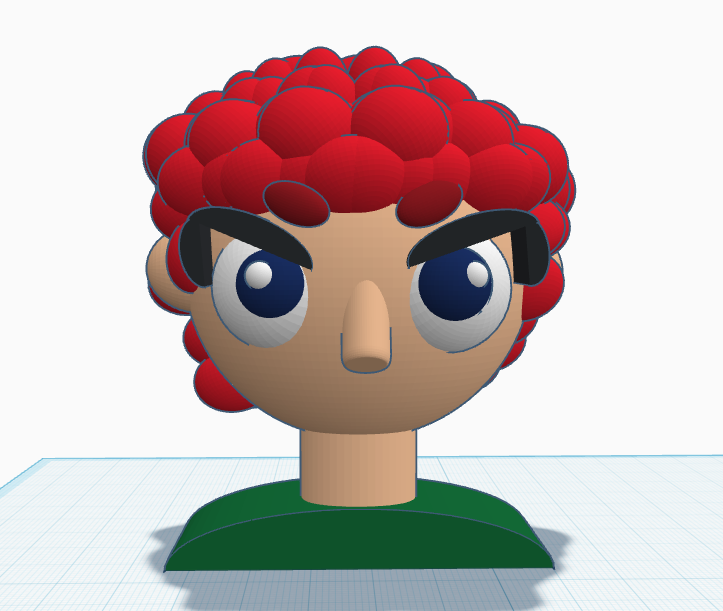

3D Project

This character I created a long time ago, more specifically 5 years ago during pandemic, in that time I create a lot of character but the one that I always remember is Misfit, the character that i want to translate to 3D, this character have many version made by me, but this last version might be my favorite for now. Misfit reminder me of the person I wanted to be when I was a teenager, big clothes, red hair, a rebel, those were the first intentions with Misfit, but when time passed my character changed a lot, I actually got red hair back in 2022, and after high school and being in college, Misfit changed a lot, now almost looking like me, he’s attitude also changed and from being a rebel to be a quiet and most pacific character, that’s why he doesn’t have a mouth, and he’s style being more radiant in colors.
Misfit is a part of my life as an artist, and whenever i feel sad or not having too much inspiration to draw, I always come back to him, to draw him again and to change his story, I always make a reflection of what is going on in my life, and based on that i changed his clothes or hairstyle. It’s a character based on me as an alter ego, and that’s why i would love to print him and put it on my backpack, it's a way to tribute my teenage self.
Software Used: Tinkercad